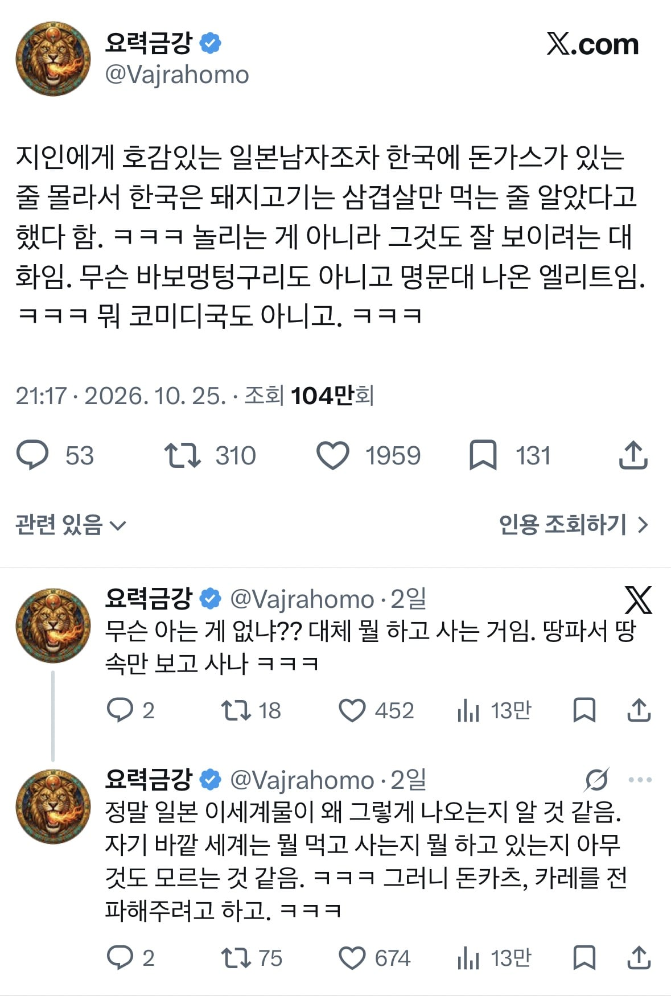
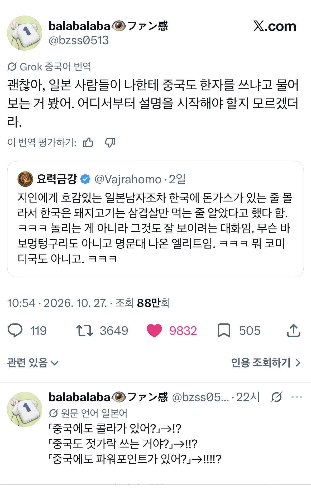
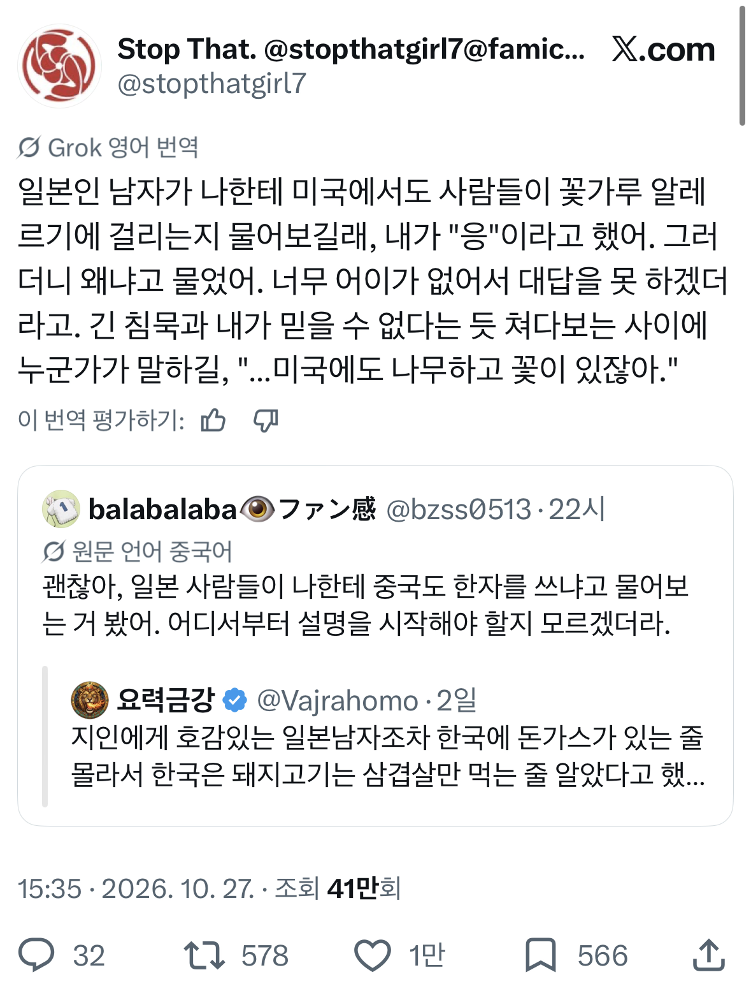
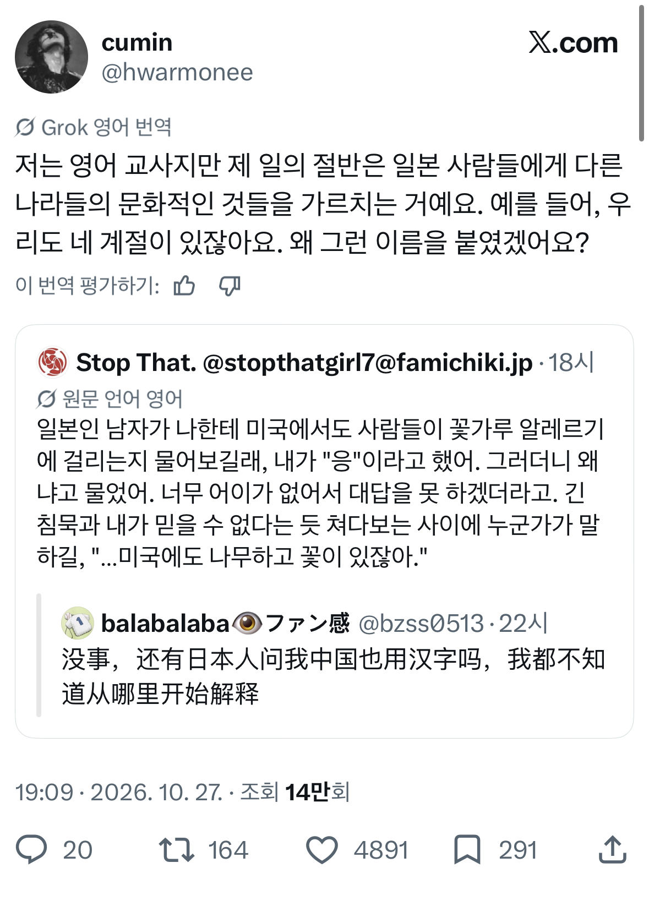
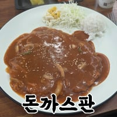

돈까스는 양반이네
중국에도 한자가 있어?
미국인도 꽃가루 알러지가 있어?
는 진짜 뭐냐




돈까스는 양반이네
중국에도 한자가 있어?
미국인도 꽃가루 알러지가 있어?
는 진짜 뭐냐
일본은 파이값이 3 이라는 말듣고 놀란기억 떠오르네
사계절은 진지하게 주장하는거기도함
내수만으로 충분히 먹고 살 만큼 나라가 커서 그럼. 섬나라기도 하고. 대부분의 사람들이 외부에 별로 관심이 없는거임
김쨩, 그거 알아? 자판기는 일본에만 있데
같이 일했던 놈한테서 들었던 이 말이 잊혀지지가 않아.....
중국에도 한자가있어는 진짜 골아프네,, 일본 교육시스템에 문제가 엄청 많은것같은데?
사계절은 일본이랑 어디에만 있다 했더라 ㅋㅋ
도쿄 10월에 30도까지 올라가는데 사계절 맞냐고 ㅋㅋㅋㅋ

우리나라 사람들은 외국에도 우리나라랑 동일~더 편리하게 만든 뭔가가 있을거라고 생각하지않나?
한자랑 계절 빼고는 그냥 그러려니 할만한듯? 일본이 원래 젤라파고스긴한데 해외 한번도 안나가보면 순수하게 모를 수도 있지뭐.
초중고 교육을 도대체 어떻게 하길래
저딴 생각을 가지는지 진짜 궁금함
해외 관심없고 일본만 살면 그럴수도
일본 말고 다른 나라가있어?!
미국인도 꽃가루 알러지가 있어? 이런거 인싸들은 일부러 알면서 물어보는 경우가 많음, 걍 웃으라고하는 스몰토크용이고 이런걸로 정색빨며 그런것도 모르냐 하는 애들이면 인성이나 사회성 떨어지는 진성 찐따라 걍 거르면 되고. 거를때 앞에서 티도 안내.
근데 그 다음 질문으로 "왜?"는 개빡 아니냐
벙찌는거 보는게 재밌나보지 ㅋㅋ 어느정도 짓굳게 그러면 벽이 허물어짐
개쌉인싸던 사수가 이런 질문해대서 난 웃으며 넘어갔는데 나중에 그런 바보같은 질문 똑같이 여러사람한테 써먹는거보고 알았다.
저게 버블때면 이해가 가는데 지금도 저러니까 ㅋㅋ
일본애들 저점은 진짜 처참하다잖어
진짜임 내가 일본인에게 들어본 충격적인 질문들 ↓
1. 한국도 사계절 있음?
여름연휴때 한국집 다녀왔다 하니까 거기도 덥냐고 물어봄
2. 한국도 주식(主食)이 쌀임?
직장 후배랑 한국식당에 밥먹으러 갔다가 밑반찬으로 떡볶이 비슷한게 나왔는데 "한국도 주식이 쌀이에요?" 하길래 그렇다고 대답하니까 "밥이 아니라 이렇게 먹어요?" ㅇㅈㄹ
3. 한국도 한자 쓰나?
이건 본문에도 있으니 생략
저런 교육을 하는 나라가 기술강국이 된게 신기하네 ㅋㅋ
일본에도 바다가 있어? 헤에 스고이네